Senior designer building visual communication systems for brands, culture, education, and research.
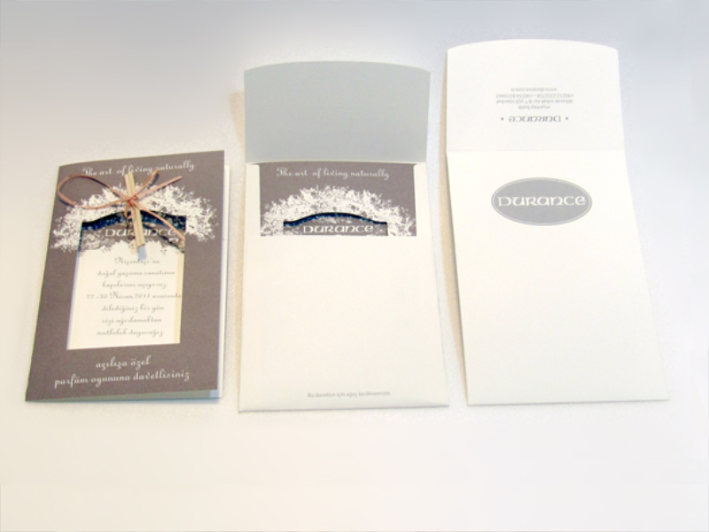
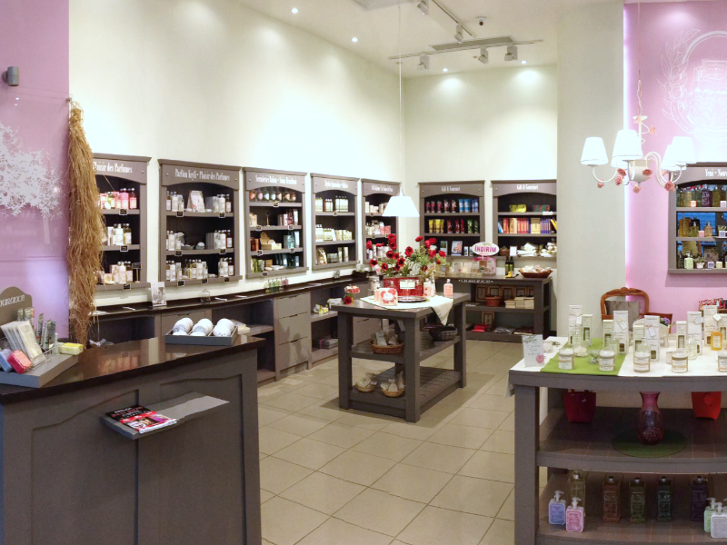
Led complete brand adaptation of French luxury home fragrance retailer for Turkish market entry. Managed visual identity across all flagship stores in multiple cities, packaging, and marketing materials while preserving brand heritage.
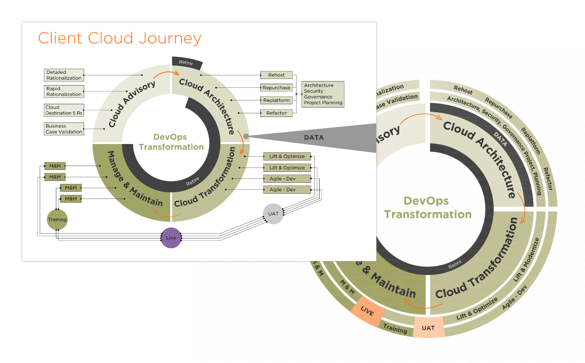
Transforming complex data, processes, and educational content into clear, engaging visual narratives for corporate, public, and children audiences.
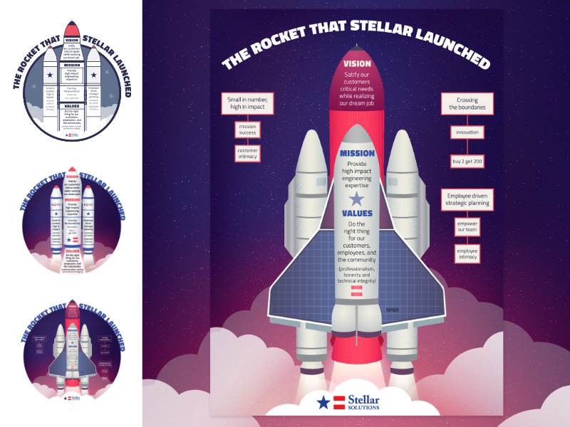
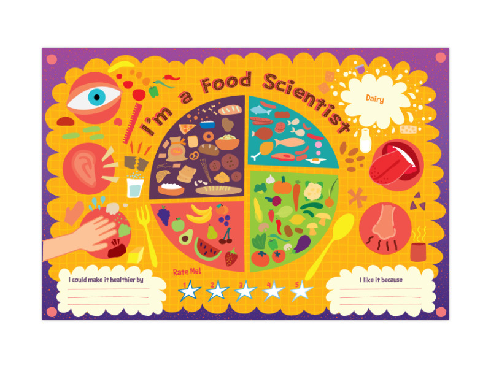
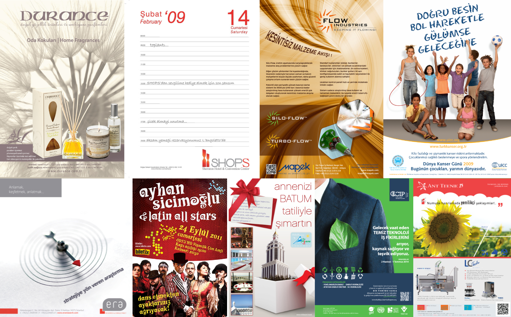
Print and digital advertising campaigns spanning retail, industry, entertainment, and public health sectors.
Social Media & Email Marketing
2006 - 2018
Visual content and campaign graphics designed for digital platforms and email marketing.
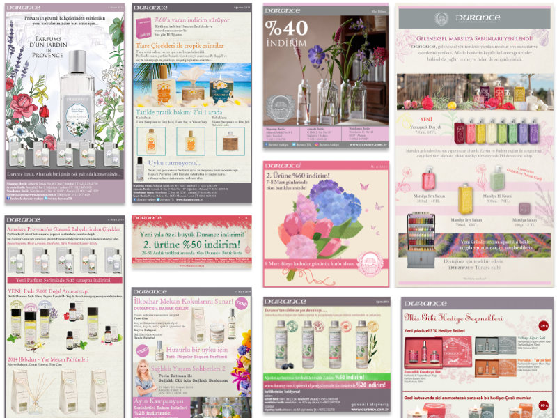

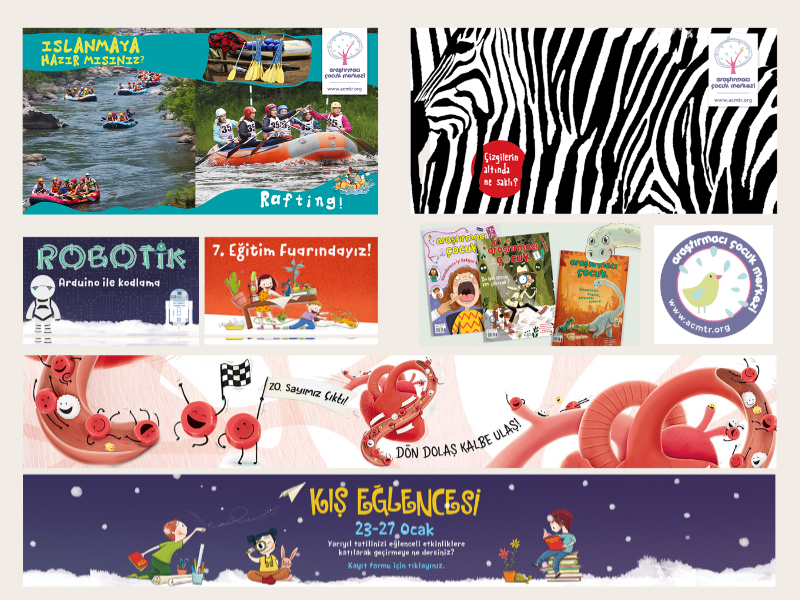
Additional brand and commercial work across various industries and formats.
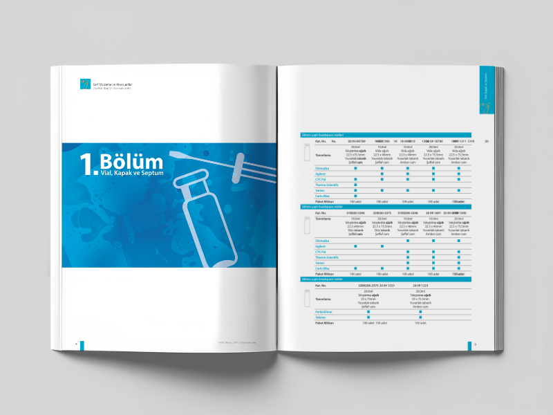
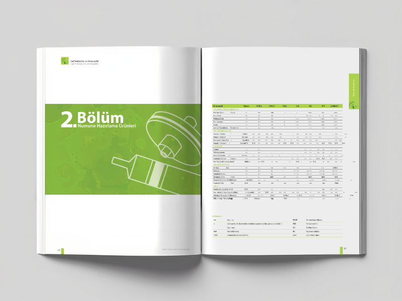
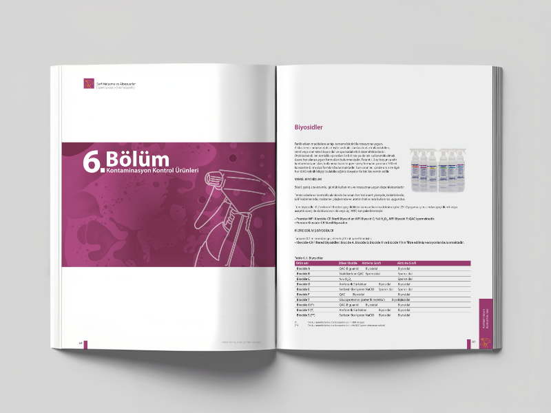
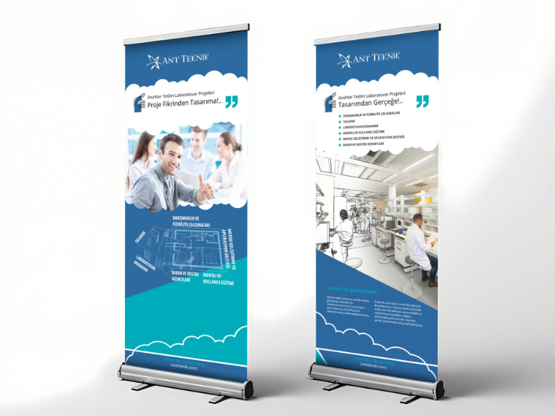